The Workmate 79-004 is easy to mistake for a 79-001 because it's the only other Workmate model that was sold in the United States with an aluminum H-frame. For all practical purposes it IS a 79-001. The only feature on the 79-004 that was never on a 79-001 is the electrical outlet strip mounted on one of the side stays (see the photo on the left). Oh, and it also included a 12-foot extension cord.
It was obviously an off-shoot of the 79-001 line, and apparently not a very successful one. Nevertheless, I'd like to make the case that the 79-004 is a pivotal part of the Workmate story, especially the story of the 79-001, in a way that I have never seen discussed. The 79-004 was priced higher than the 79-001, and for years I casually attributed this to the power strip. However, I now realize the power strip is a minor part of its much more important story.
The 79-004 was Black & Decker's attempt to save the cast-aluminum H-frame.
Scott Landis in The Workbench Book describes the situation: "In the middle of the energy crunch of the 1970s, Black & Decker abandoned the aluminum H-frame, arguably Hickman's greatest aesthetic stroke, and replaced it with stamped steel...[because] it suddenly got a whole lot cheaper to 'bash steel,' as Hickman says, than to cast aluminum, which requires a lot of electricity to produce." The Workmate was already high-priced in 1974; its original list price of $89.99 was the equivalent of $498 in 2020. The company couldn't raise the price even higher to keep up with rising costs.
To deal with the problem, Black & Decker gradually made cost-cutting changes to components of the 79-001, leading up to 1977 when they reached the difficult conclusion that, even with those changes, the aluminum H-frame was pricing them out of the part of the market the Workmate had to be in. In December 1977 the 79-001 Type 4 was switched over to a stamped steel H-frame.
But in January 1979 the aluminum H-frame was back, available exclusively on the new top-of-the-line 79-004. According to newspaper ads of the day, the steel-H-frame 79-001 had been reduced to $79.99 and the 79-004 was introduced at $89.99. It included a couple of other premium features—the return of the four screw-in feet on the legs (eliminated from the 79-001 after the Type 2) and the debut of the attached power strip. Take a look at the carton for the 79-004 shown in the last two photos in the gallery below. Note the first three features they are promoting in the bulleted list. Top of the list is the "die cast aluminum frame". They clearly felt this was the top selling point for a premium Workmate. Following that are the other two features I mentioned--the power strip and the four adjustable feet.
This was the only period when the aluminum H-frame (79-004) and steel H-frame (79-001 Type 6) were available at the same time, giving buyers a choice. The new model 79-004, with the return of some old features, was an attempt to appeal to a premium market, and possibly appease those that would be sorely disappointed if the aluminum H-frame went away entirely. It was a market test of whether buyers really valued the aluminum H-frame enough to pay the cost involved in making it.
The answer was apparently "No". 79-004's aren't exactly rare these days (I have owned two of them, one of which is pictured on this page), but they certainly aren't numerous either. It lasted less than a year, and never advanced past a Type 1, as far as I know.
So, to those who are quick to criticize Black & Decker for dropping the aluminum H-frame, I would suggest that the company didn't want to drop it any more than we wanted to see it go. They tried to save it by giving it a chance to succeed in the appropriately priced 79-004, but buyers turned down the offer. It was the last hurrah for Ron Hickman's aluminum H-frame. The customers decided what was the right combination of features and price, and it turned out to be the Workmate 79-001 with the steel H-frame.
(I will acknowledge a couple of other possible contributing factors. One is that retailers didn't want to stock two models of exactly the same size with nearly identical functionality. Dealers also may not have really understood the distinction between the two, so just considered it an extra complication that would confuse potential customers.)
The 79-004 appears to have been made only through September 1979, based on about a dozen examples I've found with Brockville production codes. This was the same time period as the 79-001 Type 6, and the 79-004 pretty much matches the Type 6 feature-for-feature, including the black H-frame bushings, the one-piece catch for the folded position, and the rubber bumper feet on the surface of the legs. Some 79-004's have the single-layer jaws of the Type 6, but others have the earlier double-layer jaws of the 79-001 Type 4. In either case, the jaw material may be either plywood or veneered MDF. Some have the spring-steel catches for the folding legs, while others have the friction hinge that became standard with the 79-001 Type 7. The premium features of four screw-in feet and aluminum H-frames were brought back from earlier Types. The label on the jaws is most similar to the style used on the Type 4. Two features that worked against it being a premium model were the top-release levers and rear-jaw pivot nuts made of plastic that it shared with the 79-001 Type 6.
I have seen the extension cord for the 79-004 only in Black & Decker ads and on the box, never with a Workmate. The outlet strip is often missing from these Workmates as well. However, if you look at the side stays on a 79-004, you will see the hole for the screw that would have held the outlet strip. That hole is not there on any Workmate 79-001.
The 79-004 is also interesting because it's an instance where Black & Decker documented a change in components for the Workmate. You can see this in the last two photos in the gallery below. The next-to-last photo shows the box for one of my 79-004's, with a bulleted list of its features down the right-hand side. The last photo is from an owner of a later 79-004. Notice the fourth item in the list on my box, touting the "Double thick vise jaws...". On the later box, this has been covered up with a sticker promoting the "NEW STRONGER SINGLE PIECE VISE JAWS".
Black & Decker Workmate 79-004
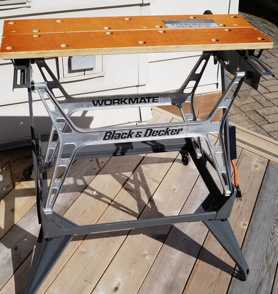
Click on any image below to open the gallery of full-screen images.


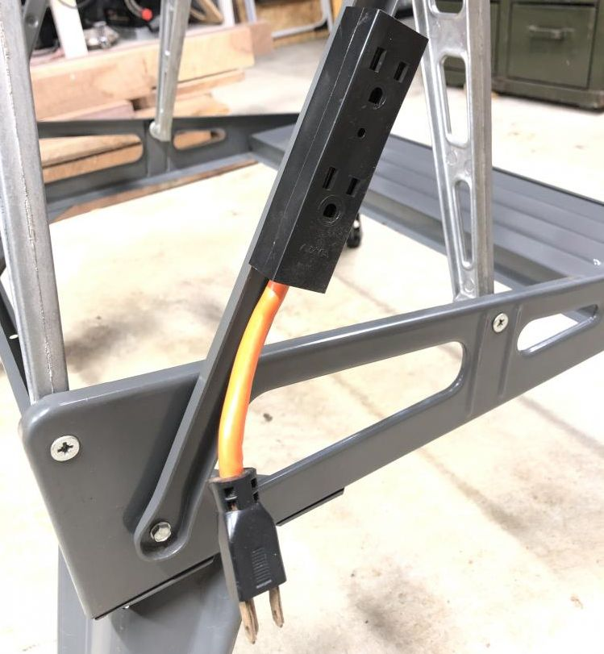

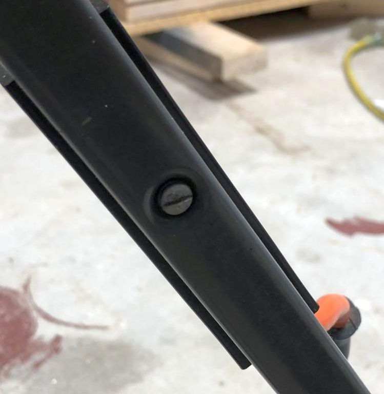

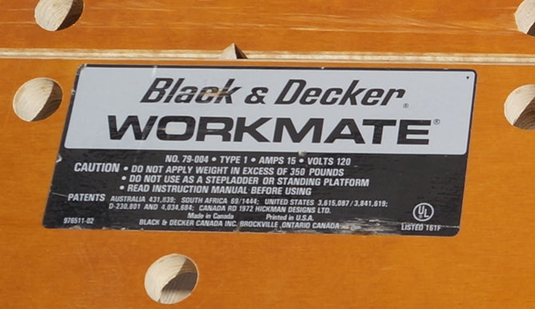

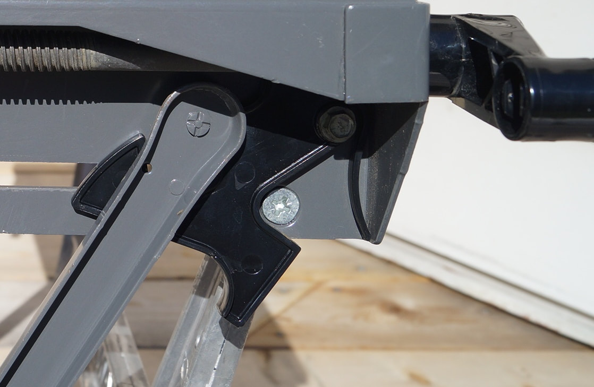

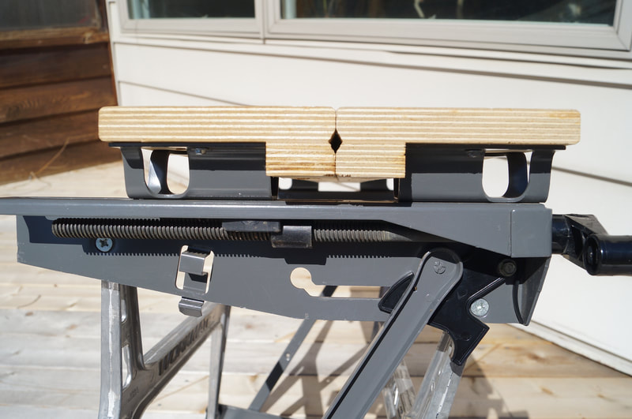


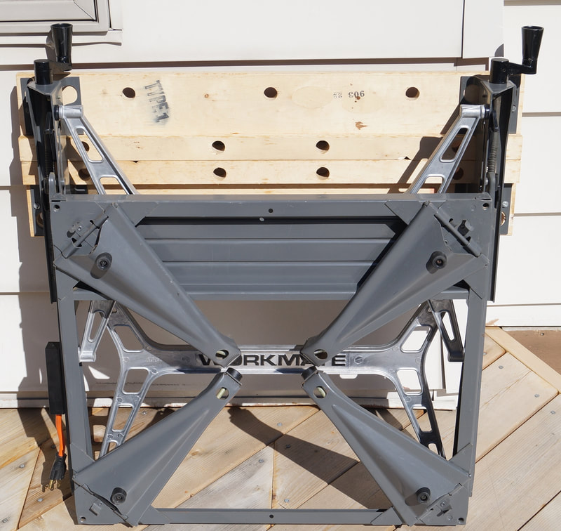

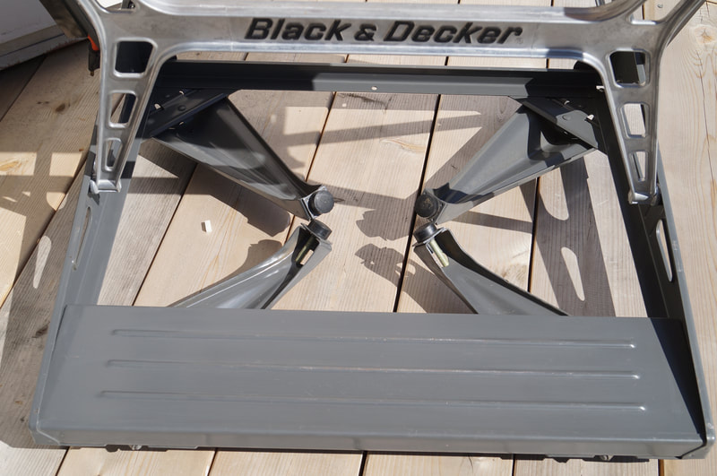


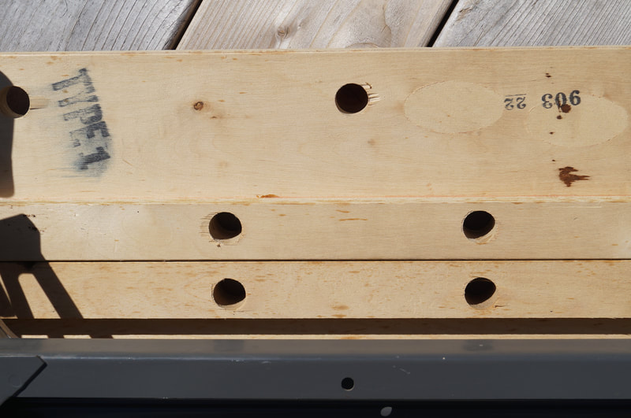

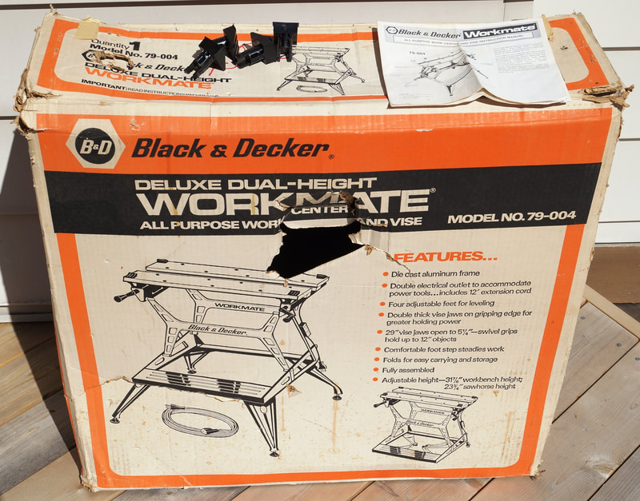

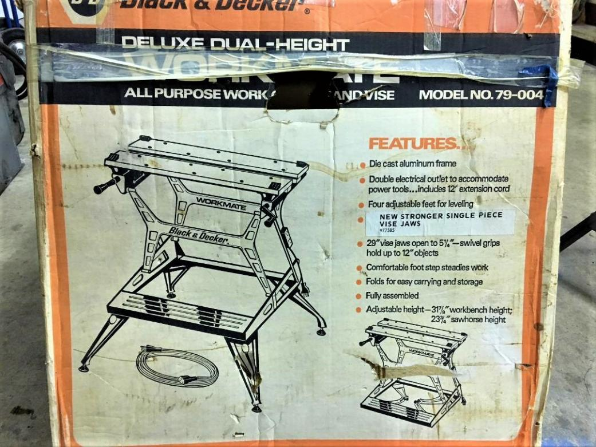